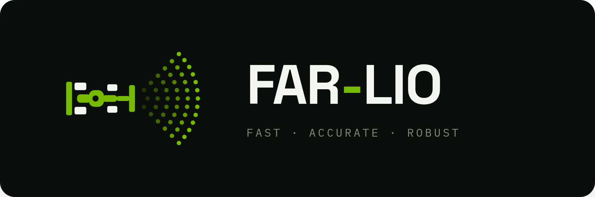
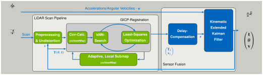

Index

A highly efficient, CUDA-accelerated framework for Fast, Accurate, and Robust LiDAR-Inertial Odometry.


Racetrack Deployment (A2RL)¶
An excerpt of FAR-LIO running on an autonomous race car on a racetrack as part of the Abu Dhabi Autonomous Racing League (A2RL).
Onboard camera footage
FAR-LIO's odometry
Architecture¶
FAR-LIO has two main components: a LiDAR Scan Pipeline that registers each incoming scan against a local map on the GPU, and a Sensor Fusion backend that fuses the registered poses with high-frequency IMU data. Green modules are GPU-accelerated (CUDA); blue modules run on the CPU.

- LiDAR Scan Pipeline (GPU) — CUDA-accelerated preprocessing and undistortion, followed by a
sparsity-aware Generalized ICP on a novel CUDA voxel hashmap (
cuVoxelMap), registering each scan against an adaptive local submap. - Sensor Fusion (CPU) — a 100 Hz kinematic Extended Kalman Filter fuses the registered LiDAR poses with the IMU stream, with delay compensation for smooth, low-latency output. Its estimate is fed back to the scan pipeline as the initial guess and for undistortion.
References¶
If you use FAR-LIO in your research, please cite our paper:
@misc{2026far-lio,
title={FAR-LIO: Enabling High-Speed Autonomy through Fast, Accurate, and Robust LiDAR-Inertial Odometry},
author={Maximilian Leitenstern and Marcel Weinmann and Patrick Haft and Tobias Lasser and Dominik Kulmer and Markus Lienkamp},
year={2026},
eprint={2606.26010},
archivePrefix={arXiv},
primaryClass={cs.RO},
url={https://arxiv.org/abs/2606.26010},
}
Core Developers¶
Marcel Weinmann
Maximilian Leitenstern
Institute of Automotive Technology, School of Engineering and Design, Technical University of Munich, 85748 Garching, Germany
Acknowledgements¶
We thank Patrick Haft and Tobias Lasser (NVIDIA Corporation) for their assistance during the CUDA development.